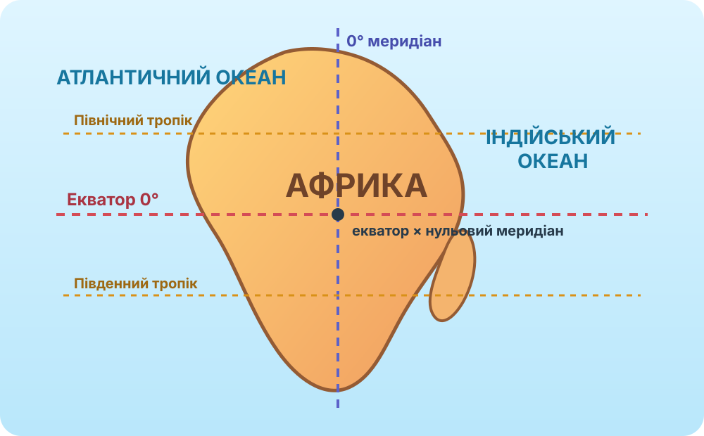

Що може означати «континент коротких тіней»?
Не шукайте визначення. Оберіть пояснення, яке можна перевірити картою та геометрією сонячного освітлення.

Схема — орієнтир. Для доказів нижче використовуйте реальну карту.
Де розташована Африка?
Перевірте, які важливі лінії градусної сітки перетинають материк і якими водними об’єктами він обмежений.
OpenStreetMap: масштаб можна змінювати. Для детального пошуку відкрийте повну карту.
Перетинає Африку майже посередині. Отже материк лежить і в Північній, і в Південній півкулях.
Північний і Південний тропіки перетинають материк. Це ключ до «коротких тіней».
Перетинає західну частину Африки, тому материк лежить і у Східній, і у Західній півкулях.
Коли полуденна тінь стає короткою?
Спрощена модель для місцевого сонячного полудня: висота Сонця ≈ 90° − |широта − сонячне схилення|. Відношення довжини тіні до висоти предмета = 1 / tan(висоти Сонця).
Тінь предмета заввишки 1 м: ≈ 0,00 м
Доказова перевірка
Позначте географічні об’єкти Африки
Працюйте на контурній карті. Онлайн-карта — лише для перевірки місцеположення. Спочатку знайдіть об’єкт, потім підпишіть його на контурній карті, після цього відмітьте виконання.
Обов’язкові об’єкти КТП
Класифікуйте об’єкти
Складне завдання: географічне положення як система
Сформулюйте 4-реченнєву характеристику положення Африки, де кожне речення відповідає на окреме питання: 1) півкулі; 2) екватор і тропіки; 3) океани й моря; 4) найближчі материки та водні рубежі.
Перевіряйте себе за реальними даними
береги, острови, протокиNASA Worldview
супутникові знімки АфрикиNASA Earth Observatory
глобальні природні картиNatural Earth
відкриті картографічні дані
Коротке відео
Відео з ресурсу, зазначеного у КТП. Дивіться вибірково: географічне положення та дослідження материка.
Що тепер можна сформулювати точно
Африка майже симетрична відносно екватора
Екватор перетинає материк, а більша частина його площі лежить у тропічних широтах. Африку також перетинають обидва тропіки й нульовий меридіан.
Чому «короткі тіні»?
Між тропіками Сонце в окремі дні може опинятися в зеніті або дуже близько до нього. Що вища висота Сонця, то коротша тінь вертикального предмета опівдні.
Берегова лінія
Африка омивається Атлантичним та Індійським океанами; на півночі — Середземним морем, на північному сході — Червоним морем. Великих півостровів і глибоких заток порівняно небагато.
Положення щодо інших материків
Найближче до Європи Африка підходить біля Гібралтарської протоки, до Азії — через район Суецького перешийка та Червоного моря.
Доведіть твердження, а не повторіть його
Твердження: «Назва “континент коротких тіней” випливає з географічного положення Африки, але не означає, що тіні там завжди короткі».
§20 + карта-доказ
1. Підручник
Опрацюйте §20. Електронний підручник: Географія, 7 клас — Гільберг, Довгань, Совенко (2024).
2. Міні-дослідження
У NASA Worldview або OSM знайдіть одну ділянку Африки на північ від Північного тропіка і одну між тропіками. Запишіть їхні приблизні координати та спрогнозуйте, де опівдні Сонце потенційно може підніматися вище.
10 завдань — 10 балів
Тест відкриється лише після введення прізвища, імені та класу.